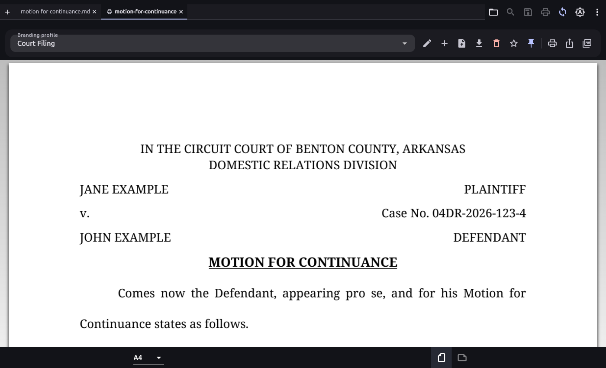
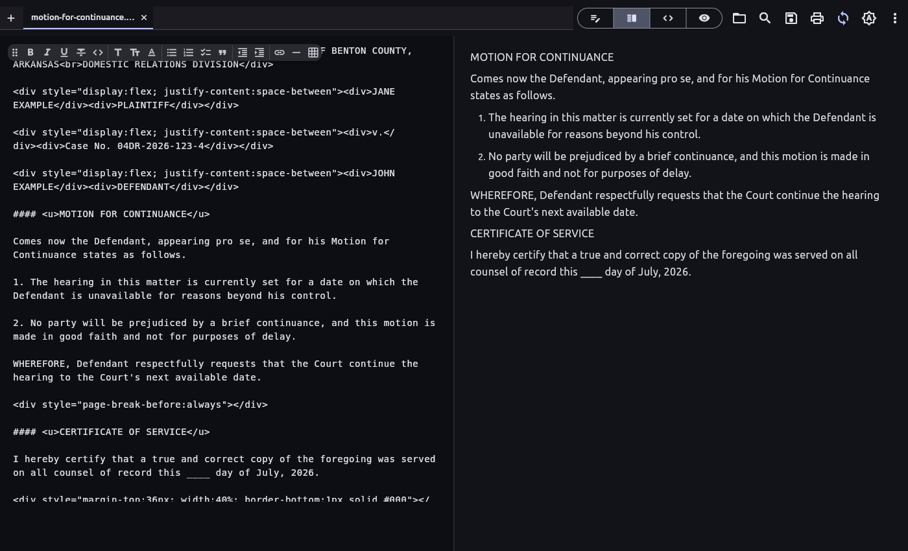

Draft with AI, file with confidence. A free Markdown viewer and Notion-style WYSIWYG editor that turns plain-text drafts into polished PDFs — branded reports, technical specs, and court-compliant filings.
Windows (MSI / setup.exe / portable) · Linux (.deb / tar.gz) · Android APK · macOS · iOS — free for non-commercial use

A plain-Markdown motion, printed with the built-in Court Filing profile: centered court header, margin-to-margin caption, 12pt double-spaced justified body, certificate of service on its own page. (source → PDF)
AI assistants read and write Markdown far better than any other format — but the world wants finished PDFs. Markdown Studio is the missing last step: keep the source in Markdown, let the AI do the drafting, pick a profile, print. Born from a real pro se litigant's workflow, where filings must follow strict formatting rules that no Markdown tool could produce.
Notion-style WYSIWYG editing, split source + live preview, raw source, and read-only preview.
Per-document branding profiles — fonts, colors, logos, headers/footers, watermarks — in a print-preview tab. Profiles are plain JSON an AI can generate.
Uniform 12pt, double-spaced, justified, first-line indents, monochrome; text flows continuously across pages like a real pleading.
Fill-in blanks, signature lines, two-column captions, and forced page breaks via a small inline-HTML subset.
Multi-document tabs, find & replace, drag & drop, auto-reload of external changes, light/dark themes.
PolyForm Noncommercial license — free for personal, research, and other non-commercial use, with the full source on GitHub.

Split view — raw Markdown with the floating format toolbar, live preview beside it.
| Windows | MSI installer · setup.exe · portable zip |
|---|---|
| Linux | .deb package · portable tar.gz |
| Android | APK (signed) |
| macOS | app zip (unsigned — right-click → Open) |
| iOS | unsigned IPA (sideload) |
Install notes ship with every release.